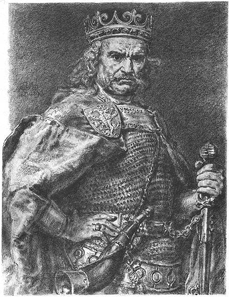

Rysunek Jana Matejki z cyklu Poczet królów i książąt polskich
Władysław Łokietek był polskim władcą, który panował w latach 1306-1333.
Był synem Kazimierza I Kujawskiego i Heleny, córki węgierskiego króla
Beli IV. Władysław Łokietek po śmierci Wacława II, króla Czech i Polski,
w 1305 roku, objął rządy w Małopolsce, ale jego władza była początkowo
ograniczona przez bunt możnych i interwencję czeską. W 1320 roku został
koronowany na króla Polski, co umocniło jego pozycję na tronie i
przyczyniło się do zjednoczenia kraju.
Władysław Łokietek przeprowadził reformy gospodarcze i administracyjne,
poprawił sytuację finansową kraju, a także prowadził skuteczną politykę
zagraniczną. Pod jego rządami Polska odzyskała też Pomorze Gdańskie i
Kujawy. Władysław Łokietek jest uważany za jednego z najważniejszych
władców Polski w średniowieczu, który przyczynił się do umocnienia
niepodległości i zjednoczenia kraju.

Obraz Stanisława Rakowskiego: "Władysław Łokietek"